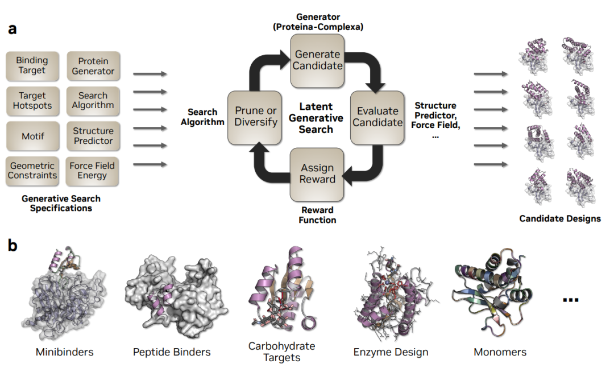
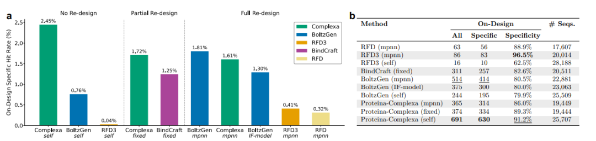
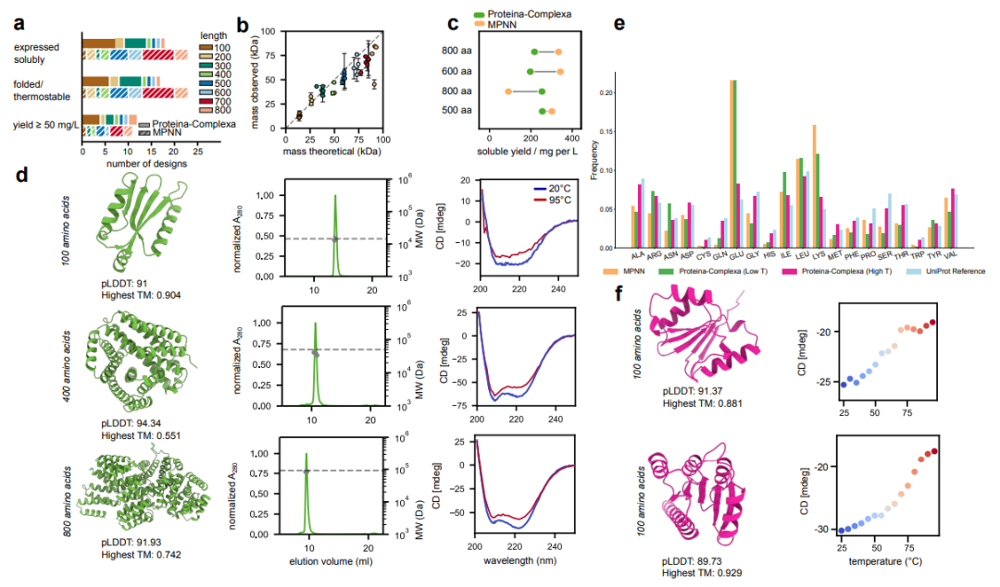
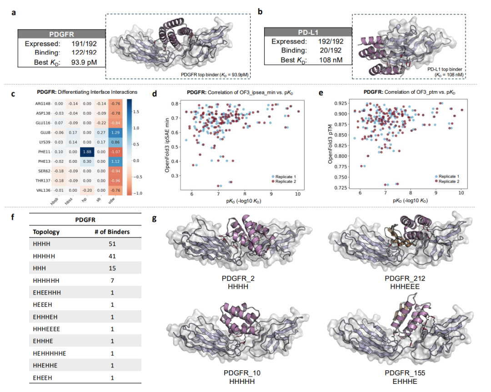
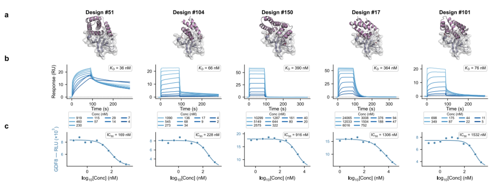
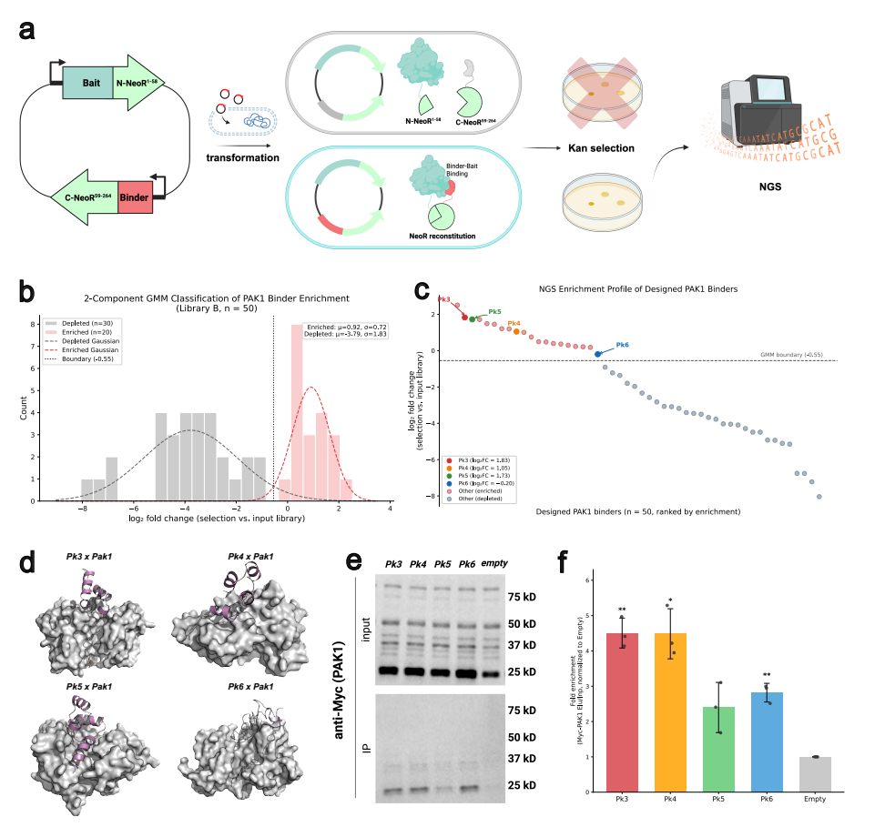
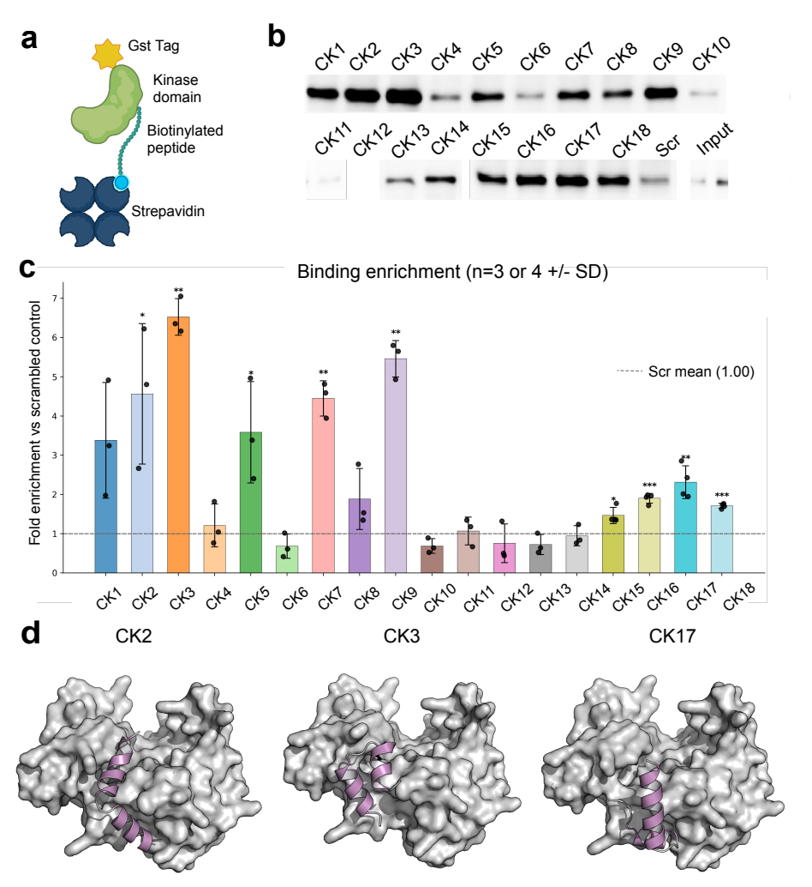
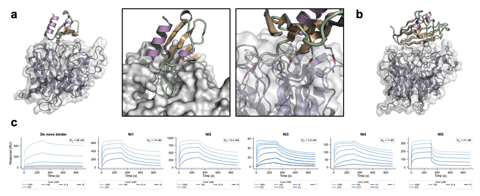
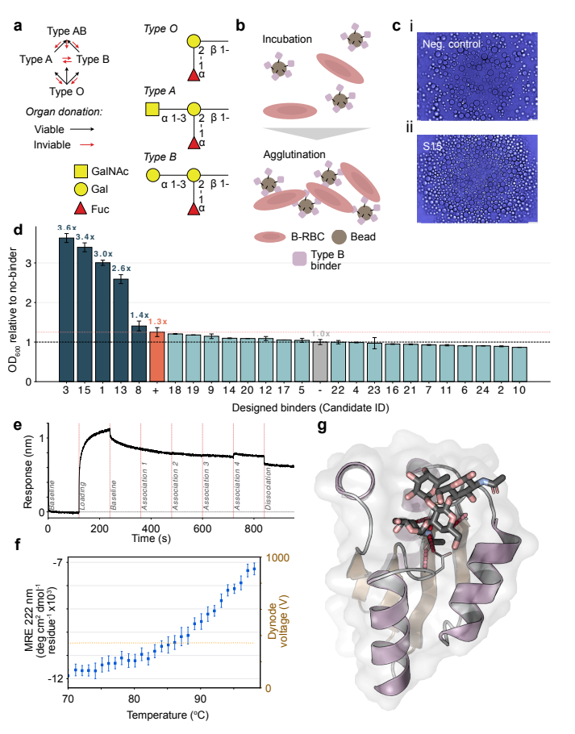

今天带来一项重磅科研突破——NVIDIA联合牛津、剑桥、杜克大学、LMU Munich、Manifold Bio等顶尖机构，最新发布了Proteina-Complexa论文Latent Generative Search unlocks de novo Design of Untapped Biomolecular Interactions at Scale。这项研究将蛋白质de novo设计推向全新范式：Latent Generative Search（潜生成搜索）。它不再是“一次生成碰运气”，而是在连续潜空间中联合建模序列+结构，并通过推理时奖励引导搜索，在规模、成功率、亲和力与靶点难度上实现全面突破。
项目页面（含代码/模型）：
https://research.nvidia.com/labs/genair/proteina-complexa/
过去蛋白质设计主要有两条技术路线：
生成式（如RFdiffusion）：先单次生成结构，再用ProteinMPNN“后补”序列；
幻觉式（如BindCraft）：直接优化序列，但缺乏生成先验，易产生非物理解。
两者都依赖后处理inverse folding，在极性界面、碳水化合物、短肽等“硬骨头”靶点上表现不佳。
部分潜空间表示（La-Proteina基础）
Cα骨架显式建模，其余原子+氨基酸身份压缩为固定维连续潜变量（VAE），完美解决原子数随氨基酸变化的难题。
流匹配生成模型
联合建模序列+全原子结构，实现端到端协同设计（co-design），不再需要ProteinMPNN后处理。
三阶段训练
单体预训练 → Teddymer合成复合物数据集 → PDB实验多聚体微调。
推理时搜索（核心创新）
支持beam search / MCTS / Sequential Monte Carlo + 多目标奖励（AF2 ipAE、RosettaFold3 ipSAE、氢键、力场能量、几何约束、序列自然性等）。
生成过程中可早期剪枝劣质轨迹、扩增优质轨迹，速度比RFdiffusion快30–60倍。

图1：Latent Generative Search 框架
（左侧生成流程，右侧展示minibinders、肽结合物、碳水化合物靶点、酶设计、单体等多种任务）
这是论文最硬核的部分。
实验规模：46.7万条Proteina-Complexa序列 + 其他方法，总计超100万蛋白，覆盖127个多样靶点，采用多重噬菌体展示，累计14万GPU小时。
结果：
Proteina-Complexa在86/127个靶点（68%） 获得on-design hit，其中74个为特异性结合。
在至少一种方法有hit的75个靶点上，on-design specific hit率达2.45%（691 hits），是次优方法（BoltzGen+ProteinMPNN）的1.35倍，更是RFdiffusion的近40倍。
自生成序列完胜后处理：ProteinMPNN redesign反而拉低了其他方法的性能，只有Proteina-Complexa的自生成序列表现最佳。这是首次在大规模实验中证明：端到端co-design可彻底取代inverse folding。

图3：各方法对比柱状图
（Proteina-Complexa自生成序列在hit数、特异性上全面领先）
Proteina-Complexa生成的单体蛋白表现同样惊艳：
48个设计（24条自生成序列 vs 24条ProteinMPNN序列）；
41/48可溶表达，38个完美单体，CD熔点全部>95℃（超稳定）；
自生成序列与ProteinMPNN性能几乎持平，证明co-design序列质量已达SOTA；
采样温度可作为调控旋钮：低温→设计性残基（高表达）；高温→更天然氨基酸分布（实现天然-like折叠）。

图4：48个单体蛋白表征
（SEC-MALS、CD谱、氨基酸分布对比、熔解曲线）
PDGFR：63.5% hit率，最高亲和力93.6 pM（双位数皮摩尔）；
PD-L1：10.4% hit率，最高108 nM；
结合模式拓扑多样（螺旋插入、不同朝向），疏水接触+热点Phe11是binder vs non-binder的核心区分因素；
OpenFold3 ipSAE/pTM与亲和力正相关。

图5：PDGFR/PD-L1体外结果 + 拓扑聚类 + 代表性复合物
200个设计 → 16个binder（8个sub-μM），最高KD 36 nM；
细胞功能验证：阻断myostatin（GDF8）诱导的Smad2/3信号，IC₅₀低至168.9 nM（无需亲和力成熟）。

图6：ActRIIA binder SPR曲线 + 细胞抑制曲线
PAK1（49–74 aa）：40% hit率（split-NeoR细菌筛选 + HEK293 co-IP验证）；
CK1δ（<31 aa短肽）：50% hit率（链霉亲和素pull-down）；
首次在极小肽尺度实现高成功率，展现框架跨尺度泛化能力。


图7 & 图8：PAK1 split-NeoR筛选 + CK1δ pull-down结果
de novo：56 nM；重设计：5/6个为纳摩尔级；
精准靶向受体结合口袋，为中和抗体开发提供起点。

图9：Nipah binder复合物结构 + SPR曲线
此前被认为“当前方法完全不可及”；
24个设计 → 5个强hit（>20% hit率）；
NV15等在红细胞凝集实验 + BLI中确认直接结合（氢键主导，快on/off rate）；
彻底攻克极性界面 + 脱溶剂化惩罚 + 小分子口袋三大难题。

图10：血型B抗原凝集实验 + BLI传感器图 + NV15结构
跑起来没那么丝滑，遇到三个典型问题：
1. AF2参数找不到
AssertionError: No model parameters found原因：Docker内外路径不一致。解决：修改路径转换逻辑或正确挂载模型文件。
2. 显存爆炸
CUDA out of memory++generation.dataloader.batch_size=1Process xxx has 77 GiB memory in useProteina-Complexa用一个框架实现了：
史上最大规模基准全面领先
皮摩尔亲和力 + 细胞功能验证
短肽到800 aa跨尺度覆盖
碳水化合物等“不可能”靶点首次突破
这不仅是模型升级，更是范式跃迁：将AI领域“生成模型+推理时计算”的成功经验，首次系统性引入生物分子设计。
未来方向已清晰可见：更多非蛋白靶点、更大规模推理时搜索、深入理解co-design最受益的表位特征。